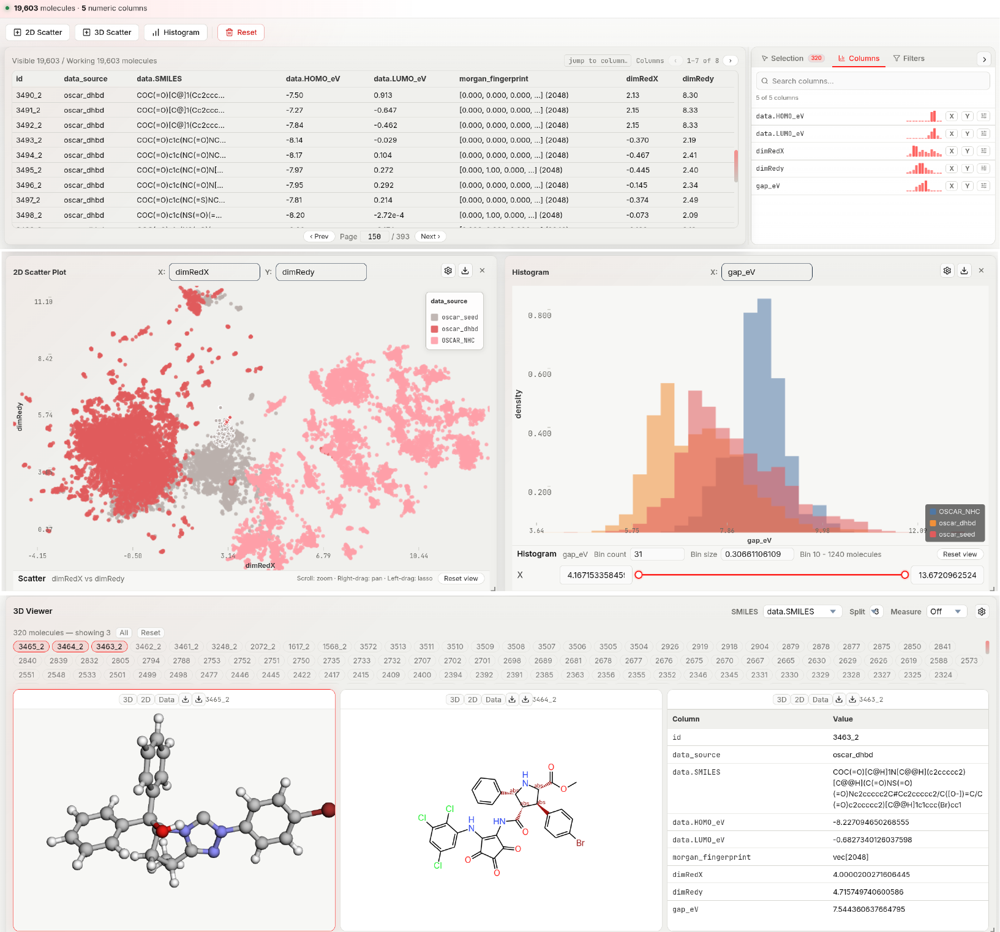

Visualization
The Visualization tab is a multi-panel workspace for exploring a compiled dataset. All panels share a selection state: interacting with any panel highlights the same molecules across all others and in the molecule viewer.

Linked plots, filters, sortable tables, and molecular viewers share the same molecule-selection state, allowing property trends and structural subsets to be inspected within a single interface.
!!! note
A dataset must be loaded before any panels can be used — either via the Data Manager, or directly from the toolbar above the tab: select a CSV file + XYZ folder (or an ASE .db file) and click Build Dataset.
Adding and arranging panels
The action bar (below the tab bar) provides three buttons:
- 2D Scatter — requires ≥ 2 numeric columns
- 3D Scatter — requires ≥ 3 numeric columns
- Histogram — requires ≥ 1 numeric column
New panels are appended below existing ones. Drag a panel by its title bar to reposition it. Drag any edge or corner to resize it. Panels can be overlapped or tiled freely.
2D Scatter plot
Each point represents one molecule. Rendered with GPU-accelerated deck.gl.
Changing axis bindings
Click the X or Y axis label directly on the plot to open a column picker. Select any numeric column; the plot re-renders immediately.
Interactions
| Action | How |
|---|---|
| Lasso select | Left-click drag on empty space — draw a freeform polygon; all points inside become selected on release |
| Select one point | Left-click a point |
| Add point to selection | Ctrl (Windows/Linux) or ⌘ (macOS) + click a point |
| Clear selection | Lasso an empty area, or left-click on empty space |
| Pan | Right-click drag |
| Zoom | Scroll wheel |
Lasso is the primary multi-selection tool. The lasso polygon activates only after the cursor has moved more than ~6 pixels from the starting point (short clicks are treated as single-point selection instead).
Plot settings
Click the ⚙ icon on any scatter panel (press Esc to close the modal).
Marker Size
| Option | Range | Description |
|---|---|---|
| Fixed size | 1–24 px (default 3) | Uniform radius for all points |
| Size by | numeric column | Map a column value to point radius; larger values = larger points |
Marker Shape (2D only)
| Option | Description |
|---|---|
| Fixed shape | Circle, Square, Diamond, or Triangle |
| Shape by | Bind shape to any column — each unique value gets its own shape |
Marker Color
| Option | Description |
|---|---|
| Fixed color | One color for all points (color picker) |
| Color by | Bind to a numeric column (continuous ramp) or categorical column (discrete palette) |
| Palette | Color ramp when Color by is numeric: Teal Sunset, Viridis, Plasma, Cividis, Turbo |
| Show colorbar | Toggle the colorbar legend on the plot |
| Categorical | Force categorical (discrete) color interpretation of a numeric column |
Graphical View
| Option | Default | Description |
|---|---|---|
| Background | Theme color | Canvas background |
| X / Y axis | on | Show/hide axis lines and labels (2D only) |
| Tick labels | on | Show/hide numeric tick labels (2D only) |
| Grid | off | Overlay a reference grid (2D only) |
| Grid density | Auto | Light or Dense when grid is on |
| Preserve aspect | off | Lock equal pixel-per-unit scale on both axes (2D only) |
| Dim unselected | off | Fade all points outside the current selection |
| Point opacity | 0.86 | Slider 0.1–1.0 |
View buttons (also in the settings modal):
| Button | Effect |
|---|---|
| Fit all | Zoom to show all data points |
| Fit visible | Zoom to the current filter-visible points only |
| Reset zoom | Return to the initial auto-fit view |
Per-axis settings (X, Y; Z for 3D)
Each axis has its own section:
- Label — override the default column name with custom text
- Range min / max — clip the visible range without filtering the underlying data
Statistical View
Enable Show summary and correlation to overlay mean, standard deviation, and Pearson r for the two plotted axes.
3D Scatter plot
Identical axes, interactions, and settings to the 2D scatter plot, with an added Z axis binding. Shape settings are not available in 3D.
Histogram
Bins one numeric column into bars. Click a bar to select all molecules in that bin range.
Histogram settings
Click ⚙ on the histogram panel.
| Option | Default | Description |
|---|---|---|
| Bin count | 40 | Number of bars (1–5 000) |
| Bar fill color | — | Interior color |
| Bar border color | — | Outline color |
| Bar opacity | 0.75 | Slider 0.05–1.0 |
| Background | Theme color | Canvas background |
| X / Y axis | on | Show/hide axis lines |
| Tick labels | on | Show/hide numeric tick labels |
| Grid | off | Reference grid |
| Grid density | Auto | Light or Dense when grid is on |
| Highlight selected bin | on | Emphasise the bar(s) containing selected molecules |
| Dim unselected bins | off | Fade bars with no selected molecules |
| Show stats | off | Overlay mean and standard deviation |
3D Structure Viewer
The molecule viewer renders the 3D geometry of each selected molecule. It supports viewing up to 9 molecules simultaneously in a configurable split layout.
Viewer controls (header bar)
| Control | What it does |
|---|---|
| SMILES column dropdown | Choose which dataset column contains SMILES strings for 2D rendering |
| Split (1–9) | Number of panes shown simultaneously (1×1 up to 3×3 grid) |
| Measure mode | Off / Distance / Angle — enables atom-click measurement |
| Clear | Remove all measurement annotations (appears when measure mode is active) |
| ⚙ Settings | Open the viewer settings modal |
Selecting which molecules to display
When molecules are selected (via plots or lasso), a row of molecule ID pills appears below the header. Each pill represents one selected molecule.
- Click a pill to toggle it on/off in the viewer panes
- All — load up to 9 selected molecules at once
- Reset — clear the display (pills remain in the selected set; they just stop showing in panes)
The text shows N molecule(s) — showing M to indicate selection size vs. display size.
Pane view modes
Each pane has three view modes toggled by buttons in the pane header:
| Mode | What is shown |
|---|---|
| 3D | Interactive 3D ball-and-stick / sticks / spacefill rendering |
| 2D | 2D structural diagram rendered from the SMILES column |
| Data | Table of all property values for that molecule |
2D mode requires a valid SMILES string in the selected SMILES column. If SMILES is absent or not renderable, a status message explains why.
Data mode shows every column from the dataset in a two-column table (Column / Value). Null values are displayed as —.
Measurements
Set Measure mode to Distance or Angle, then click atoms in a 3D pane:
- Distance: click 2 atoms → shows the Å distance between them
- Angle: click 3 atoms → shows the bond angle in degrees
Clicked atoms are highlighted in cyan, magenta, and yellow in sequence. Click Clear to remove all annotations or switch the mode dropdown to reset.
Per-pane downloads
Each pane header has two download buttons:
| Button | Output |
|---|---|
| SVG | Server-rendered 3D projection as a vector SVG (via OpenBabel) |
| PNG | Screenshot of the current 3D canvas |
Viewer settings
| Setting | Options | Description |
|---|---|---|
| Render style | Ball + stick / Sticks / Spacefill | 3D display style |
| Show hydrogens | on / off | Show or hide hydrogen atoms in 3D |
| Atom labels | Off / Atomic index / Atomic number / Atomic type | Label each atom in the 3D view |
| Background | color picker | Canvas background for all panes |
Data table
A sortable, paginated table of all dataset rows. Selected rows are highlighted. Click a row to select that molecule. Sort by clicking a column header; resize columns by dragging their edges.
Filter panel
Row-level filters apply across all panels in real time. The active filter scope is also used when exporting from the Data Manager.
| Filter type | Applies to | How it works |
|---|---|---|
| Range | Numeric columns | Slider with min/max bounds; rows outside the range are hidden |
| Contains | Text columns | Case-insensitive substring match |
| Boolean | Boolean columns | Three-state toggle: any / true / false |
| SMARTS | SMILES column | Substructure match using a SMARTS pattern |
| Similarity | SMILES column | Tanimoto similarity ≥ threshold against a query SMILES |
SMARTS (SMiles ARbitrary Target Specification): a pattern language for substructure queries (e.g. [#6]~[#7] matches any carbon bonded to any nitrogen by any bond type).
Tanimoto similarity: ranges 0–1 (0 = nothing in common, 1 = identical) based on shared Morgan fingerprint bits between the query and each dataset molecule.